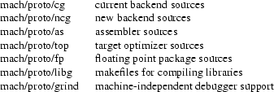
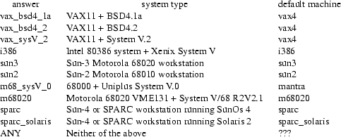

This document describes the process of installing the Amsterdam Compiler Kit (ACK). It depends on the combination of hard- and software how hard it will be to install the Kit. This description is intended for a Sun-3 or SPARC workstation. Installation on VAXen running Berkeley UNIX ® or Ultrix, Sun-2 systems and most System V UNIX systems should be easy. As of this distribution, installation on PDP-11’s or other systems with a small address space is no longer supported. See section 8 for installation on other systems.
In the ACK installation process, three directory trees are used:
|
- |
the ACK source tree. This is the tree on the ACK distribution medium. For the rest of this document, we will refer to this directory as $SRC_HOME; |
|
- |
a configuration tree. This tree is built by the installation process and is used to do compilations in. Its structure reflects that of the source tree, but this tree will mostly contain Makefiles and relocatable objects. For the rest of this document, we will refer to this directory as $CONFIG; |
|
- |
an ACK users tree. This tree is also built by the installation process. For the rest of this document, we will refer to this directory as $TARGET_HOME; |
After installation, the directories in $TARGET_HOME contain the following information:
|
bin |
the few utilities that knot things together. See the section about "Commands". |
|
lib |
root of a tree containing almost all libraries used by commands. Files specific to a certain machine are collected in one subtree per machine. E.g. "lib/pdp", "lib/z8000". The names used here are the same names as used for subtrees of "$SRC_HOME/mach". |
|
lib/descr |
command descriptor files used by the program ack. |
|
lib/LLgen |
files used by the LL(1) parser generator. |
|
lib/flex |
files used by the lexical analyzer generator Flex. |
|
lib/m2 |
definition modules for Modula-2. |
|
lib.bin |
root of a tree containing almost all binaries used by commands. All programs specific to a certain machine are collected in one subtree per machine. E.g. "lib.bin/pdp", "lib.bin/z8000". The names used here are the same names as used for subtrees of "$SRC_HOME/mach". |
|
lib.bin/ego |
files used by the global optimizer. |
|
lib.bin/lint |
binaries for the lint passes and lint libraries. |
|
lib.bin/ceg |
files used by the code-expander-generator. |
|
etc |
contains the file "ip_spec.t" needed for EM interpreters and EM documentation. |
|
config |
contains two include files: |
|
These include files are specific for the current machine, so they are in a separate directory. |
include/_tail_cc
|
include files needed by modules in the C library from lang/cem/libcc. |
include/tail_ac
|
include files for ANSI C. |
|
include/occam |
include files for occam. |
include/_tail_mon
|
more or less system independent include files needed by modules in the library lang/cem/libcc/mon. |
|
h |
the #include files for: |

|
modules |
root of a tree containing modules for compiler writers. |
|
modules/man |
manual pages for all modules. |
|
modules/lib |
contains module objects. |
|
modules/h |
include files for some of the modules. |
|
modules/pkg |
include files for some of the modules. |
|
doc |
this directory contains the unformatted documents for the Kit. A list of the available documents can be found in the last section. These documents must be processed by [nt]roff. |
|
man |
man files for various utilities. |
When installing ACK on several types of machines with a shared file system, it may be useful to know that the "doc", "etc", "h", "include", "lib" and "man" sub-directories do not depend on this particular installation. They do not contain binaries or path-dependent information. These directories can therefore be shared between the ACK installations. This can be accomplished by creating the tree and suitable symbolic links before starting the installation process.
For instance, let us say there is a file-system that is accessible from the different machines as "/usr/share/local", and the ACK binary tree must be installed in "/usr/local/ack". In this case, proceed as follows:
|
− |
create a directory "/usr/share/local/ack", with subdirectories "doc", "etc", "h", "include", "lib" and "man". |
|
− |
create a directory "/usr/local/ack" and then create symbolic links "doc" to "/usr/share/local/ack/doc", etc. |
If this is done on all machines on which ACK will be installed, the machine-independent part only has to be installed once, preferably on the fastest processor (it takes a long time to install all libraries).
The directories in the source tree contain the following information:
|
bin |
source of some shell-scripts. |
|
lib |
mostly description files for the "ack" program. |
|
etc |
the main description of EM sits here. Files (e.g. em_table) describing the opcodes and pseudos in use, the operands allowed, effect in stack etc. etc. |
|
mach |
just there to group the directories with all sources for each machine. The section about "Machines" of this manual indicates which subdirectories are used for which systems. |
|
These directories have subdirectories named: |

|
Actually, some of these directories will only appear in
the configuration tree. |

|
emtest |
contains prototype of em test set. |
|
lang |
just there to group the directories for all front-ends. |
|
lang/pc |
the Pascal front-end. |
|
lang/pc/libpc |
|
source of Pascal run-time system (in EM or C). |
|
lang/pc/test |
some test programs written in Pascal. |
|
lang/pc/comp |
the Pascal compiler proper. |
|
lang/cem |
the C front-end. |
lang/cem/libcc
|
directories with sources of C runtime system, libraries (in EM or C). |
lang/cem/libcc/gen
|
sources for routines in chapter III of UNIX programmers manual, excluding stdio. |
lang/cem/libcc/stdio
|
stdio sources. |
lang/cem/libcc/math
|
sources for mathematical routines, normally available with the -lm option to cc. |
lang/cem/libcc/mon
|
sources for routines in chapter II, mostly written in EM. |
lang/cem/cemcom
|
the compiler proper. |
lang/cem/cemcom.ansi
|
the ANSI C compiler proper. |
lang/cem/cpp.ansi
|
the ANSI C preprocessor. |
lang/cem/libcc.ansi
|
the ANSI C library sources. |
lang/cem/ctest
|
the C test set. |
lang/cem/ctest/cterr
|
programs developed for pinpointing previous errors. |
lang/cem/ctest/ct*
|
the test programs. |
|
lang/cem/lint |
a C program checker. |
lang/cem/lint/lpass1
|
the first pass of lint. |
lang/cem/lint/lpass1.ansi
|
the first pass of lint, this time for ANSI C. |
lang/cem/lint/lpass2
|
the second pass of lint, shared between ANSI C and "old-fashioned" C. |
lang/cem/lint/llib
|
programs for producing lint libraries. |
|
lang/basic |
the Basic front-end. |
lang/basic/src
|
the compiler proper. |
lang/basic/lib
|
the Basic run-time library source. |
lang/basic/test
|
various Basic programs. |
|
lang/occam |
the occam front-end. |
lang/occam/comp
|
the compiler proper. |
lang/occam/lib
|
source of occam run-time system (in EM or C). |
lang/occam/test
|
some occam programs. |
|
lang/m2 |
the Modula-2 front-end. |
|
lang/m2/comp |
the compiler proper. |
|
lang/m2/libm2 |
source of Modula-2 run-time system (in EM, C and Modula-2). |
|
lang/m2/m2mm |
the Modula-2 makefile generator. |
|
lang/m2/test |
some Modula-2 example programs. |
|
lang/fortran |
the Fortran front-end (translates Fortran into C). This compiler is not a part of ACK, but is included because it adds another language. The Fortran system carries the following copyright notice: |
/************************************************************** Copyright 1990, 1991 by AT&T Bell Laboratories and Bellcore. Permission to use, copy, modify, and distribute this software and its documentation for any purpose and without fee is hereby granted, provided that the above copyright notice appear in all copies and that both that the copyright notice and this permission notice and warranty disclaimer appear in supporting documentation, and that the names of AT&T Bell Laboratories or Bellcore or any of their entities not be used in advertising or publicity pertaining to distribution of the software without specific, written prior permission. AT&T and Bellcore disclaim all warranties with regard to this software, including all implied warranties of merchantability and fitness. In no event shall AT&T or Bellcore be liable for any special, indirect or consequential damages or any damages whatsoever resulting from loss of use, data or profits, whether in an action of contract, negligence or other tortious action, arising out of or in connection with the use or performance of this software. **************************************************************/ |
lang/fortran/comp
|
the compiler proper. |
lang/fortran/lib
|
source of Fortran runtime system and libraries. |
|
fast |
contains sub-directories for installing the fast ACK compatible compilers. |
|
fast/driver |
|
contains the sources of the fast ACK compatible compiler drivers. |
|
fcc |
contains the fast cc-compatible C compiler for SUN-3 and VAX. |
|
util |
contains directories with sources for various utilities. |
|
util/ack |
the program used for translation with the Kit. |
|
util/opt |
the EM peephole optimizer (*.k => *.m). |
|
util/ego |
the global optimizer. |
|
util/topgen |
the target optimizer generator. |
|
util/misc |
decode (*.[km] => *.e) + encode (*.e => *.k). |
|
util/data |
the C-code for $TARGET_HOME/lib.bin/em_data.a. These sources are created by the Makefile in ‘etc‘. |
|
util/ass |
the EM assembler (*.[km] + libraries => e.out). |
|
util/arch |
the archivers to be used for all EM utilities. |
|
util/cgg |
a program needed for compiling backends. |
|
util/ncgg |
a program needed for compiling the newest backends. |
|
util/cpp |
the C preprocessor. |
|
util/shf |
various shell files. |
|
util/LLgen |
the extended LL(1) parser generator. |
|
util/amisc |
contains some programs handling ACK a.out format, such as anm, asize. |
|
util/cmisc |
contains some programs to help in resolving name conflicts, and a dependency generator for makefiles. |
|
util/led |
the ACK link-editor, reading ACK relocatable a.out format, and writing ACK a.out format. |
|
util/int |
an EM interpreter, written in C. Very useful for checking out software, but slow. |
|
util/ceg |
code expander generator. |
|
util/grind |
a symbolic debugger. |
|
util/byacc |
this is Berkeley yacc, in the public domain. |
|
util/flex |
this is a replacement for lex. It carries the following copyright notice: |
Copyright (c) 1990 The Regents of the University of California. All rights reserved. This code is derived from software contributed to Berkeley by Vern Paxson. The United States Government has rights in this work pursuant to contract no. DE-AC03-76SF00098 between the United States Department of Energy and the University of California. Redistribution and use in source and binary forms are permitted provided that: (1) source distributions retain this entire copyright notice and comment, and (2) distributions including binaries display the following acknowledgement: ‘‘This product includes software developed by the University of California, Berkeley and its contributors’’ in the documentation or other materials provided with the distribution and in all advertising materials mentioning features or use of this software. Neither the name of the University nor the names of its contributors may be used to endorse or promote products derived from this software without specific prior written permission. THIS SOFTWARE IS PROVIDED ‘‘AS IS’’ AND WITHOUT ANY EXPRESS OR IMPLIED WARRANTIES, INCLUDING, WITHOUT LIMITATION, THE IMPLIED WARRANTIES OF MERCHANTABILITY AND FITNESS FOR A PARTICULAR PURPOSE. |
All path names mentioned in the text of this document are relative to $SRC_HOME, unless they start with ’/’ or one of $SRC_HOME, $TARGET_HOME or $CONFIG.
The process of installing the Amsterdam Compiler Kit is quite simple. The first step is to restore the Amsterdam Compiler Kit distribution tree structure. Proceed as follows
|
− |
Create a directory, for example /usr/share/local/src/ack, on a device with at least 15 Megabytes left. This directory will be $SRC_HOME. |
|
− |
Change to that directory (cd ...). |
|
− |
Extract all files from the distribution medium, for instance magtape: tar x. |
|
− |
Keep a copy of the original distribution to be able to repeat the process of installation in case of disasters. This copy is also useful as a reference point for diff-listings. |
Before compiling the sources in the Kit some installation dependent actions have to be taken. Most of these are performed by an interactive shell script in the file $SRC_HOME/first/first. Calling this script should be done from another directory, for instance an empty directory which will later become $CONFIG.
The actions of the first script are:
|
− |
Asking for the path names of the ACK source directory ($SRC_HOME), the configuration directory ($CONFIG), and the ACK users directory ($TARGET_HOME). About 5M are needed for the configuration tree. The disk space needed for the ACK users tree depends on which front-ends and back-ends are to be installed. For instance, on our SPARC systems we have installed all languages and 6 back-ends, including the system-independent part. This amounts to about 16M. On our SUN-3 systems, we have installed all front-ends and 5 back-ends, but only the machine-dependent part. The machine-independent directories are symbolic links to the SPARC ACK users tree. We also have the fast ACK compilers installed on the SUN-3’s. The total amount of disk-space used is less than 8M. |
|
− |
Asking for what type of system the binary tree must be produced for and creating the shell script "ack_sys" in the Kit’s bin directory. Several utilities make use of "ack_sys" to determine the type of system. The current choice is between: |

|
For some of these, the installation procedure has not been tested, as we don’t have them. For others, the installation procedure has only been tested with earlier distributions, as we don’t have those systems anymore. However, the sun3 and sparc systems are known to behave reasonably. The sparc_solaris system has only been tested with the GNU C compiler, because we don’t have the SUN C compiler (it is unbundled in Solaris 2). The Sun systems should run SunOs Release 3.0 or newer. The i386 choice may also be used for Intel 80386 or 80486 systems running UNIX System V Release 4. These systems are also able to run Xenix System V binaries. If the target system is not on this list, choose one that comes close. If none of them come close, use the "ANY" choice. For ANY, any name can be used, but the Kit will not be able to compile programs for the target system. See the section about "compilation on a different machine". |
|
− |
Setting the default machine for which code is produced to the local type of system according to the table above. This in done in the file "$TARGET_HOME/config/local.h". See also section 9.1. |
|
− |
Asking for things that don’t have to be installed. |
|
− |
Producing a shell script called "INSTALL" that will take care of the ACK installation process. |
The next step in the installation process is to run the "INSTALL" shell-script. When using a Bourne-shell, type:
sh INSTALL > INSTALL.out 2>&1 &
When using a C-shell, type:
sh INSTALL >& INSTALL.out &
This shell-script performs the following steps:
|
− |
Produce a configuration tree ($CONFIG), reflecting the structure of the source tree. |
|
− |
Produce Makefiles in $CONFIG. As mentioned before, compilations will be done in the configuration tree, not in the source tree. Most configuration directories will have Makefiles used to compile and install the programs in that directory. All programs needed for compilation and/or cross compilation with the Kit are installed in $TARGET_HOME by these Makefiles. These Makefiles are produced from corresponding files called "proto.make" in the source tree. In fact, the "proto.make" files are almost complete Makefiles, except for some macro definitions that are collected by the first script. The Makefiles adhere to a standard which is described in the section 9. |
|
− |
Copy "Action" files to the configuration tree and editing them to reflect the choices concerning the parts of ACK that have to be installed. "Action" files are described below. |
|
− |
Copy part of the source tree to the ACK users tree (include files, manual pages, documentation, et cetera). |
|
− |
Calling the "TakeAction" script. All these Makefiles do not have to be called separately. We wrote a shell script calling the make’s needed to install the whole Kit. This script consists of the file $SRC_HOME/TakeAction and a few files called Action in some configuration directories. The Action files describe in a very simple form which actions have to be performed in which directories. The default action is to start "make install && make clean". The output of each make is diverted to a file called "Out" in the same directory as the make was started in. If the make was successful (return code 0) the Out file is removed and the script TakeAction produces a small message indicating that it succeeded in fulfilling its goal. If the make was not successful (any other return code) the Out file is left alone for further examination and the script TakeAction produces a small message indicating that it failed. |
|
For some programs the scripts already know they can’t be installed on the local type of system. In that case they produce a message "Sorry, ....." and happily proceed with further installation commands. |
Installation of the Kit might take anything from a few hours to more than a day, depending on the speed of the local machine and what must be installed.
If the installation succeeded, the Kit is ready to be used. Read section 6 and the manuals provided with the Kit (in the $TARGET_HOME/man directory) on how to use it.
The Unisoft C compiler has a bug which impedes the correct translation of the peephole optimizer. For a more detailed description of this phenomenon see the file "$SRC_HOME/mach/m68k2/Unisoft_bug". (This observation was made in 1985 or so, so it is probably no longer true).
The backends for the PDP11, VAX, Motorola 68000 and 68020, SPARC, Intel 8086, and Intel 80386 have been heavily used by ourselves and are well tested. The backends for the other machines are known to run our own test programs, but might reveal errors when more heavily used.
System definition -- done
EM definition library -- done
C utilities -- done
Flex lexical analyzer generator -- done
Yacc parser generator -- done
system-call interface module -- done
.
.
.
EM Global optimizer -- done
ACK archiver -- done
Program ’ack’ -- done
Bootstrap for backend tables -- done
Bootstrap for newest form of backend tables -- done
.
.
.
C frontend -- done
ANSI-C frontend -- done
ANSI-C preprocessor -- done
ANSI-C header files -- done
Failed for LINT C program checker, see lang/cem/lint/Out
Pascal frontend -- done
Basic frontend -- done
.
.
.
Vax 4-4 assembler -- done
Vax 4-4 backend -- done
Vax target optimizer -- done
ACK a.out to VAX a.out conversion program -- done
Sorry, Vax code expander library can only be made on vax* systems
Vax 4-4 EM library -- done
Vax 4-4 debugger support library -- done
Vax 4-4 etext,edata,end library -- done
Vax 4-4 systemcall interface -- done
.
.
.
The lines starting with "Sorry, " indicate that certain programs cannot be translated on the local machine. The lines starting with "Failed for" indicate that certain programs/libraries were expected to, but did not compile. In this example, the installation of LINT failed. To repeat a certain part of the installation, look in the Action file, which resides in the root of the configuration tree, for the directory in which that part is to be found. If that directory contains an Action file issue the command "sh $CONFIG/bin/TakeAction", otherwise type "make install".
The following commands are available in the $TARGET_HOME/bin directory after compilation of the Kit:
ack, acc, abc, apc, ocm, m2, f2c and their links
|
the names mentioned here can be used to compile Pascal, C, etc... programs. Most of the links can be used to generate code for a particular machine. See also the section about "Machines". |
|
arch |
the archiver used for the EM- and universal assembler/loader. |
|
aal |
the archiver used for ACK objects. |
|
em |
this program selects a interpreter to execute an e.out file. Interpreters exist for PDP-11 and Motorola 68000 systems. |
|
eminform |
the program to unravel the post-mortem information of the EM interpretator for the PDP-11. |
|
LLgen |
the LL(1) parser generator. |
|
ack_sys |
a shell script producing an identification of the target system. Used by some utilities to determine what is, and what is not feasible on the target system. |
|
march |
a shell script used while compiling libraries. |
asize, anm, astrip
|
do the same as size, nm and strip, but for ACK object format. |
|
mkdep |
a dependency generator for makefiles. |
cid, prid, cclash
|
some utilities for handling name clashes in C programs. Some systems have C-compilers with only 7 or 8 characters significant in identifiers. |
|
tabgen |
a utility for generating character tables for C-programs. |
|
int |
an EM interpreter. This one is written in C, and is very useful for checking out programs. |
|
grind |
a source level debugger for C, ANSI-C, Modula-2 and Pascal. |
afcc, afm2, afpc
|
these are ACK-compatible fast C, Modula-2 and Pascal compilers, available for M68020, VAX and Intel 80386 systems. They compile very fast, but produce slow code. |
|
fcc |
this is a cc-compatible fast C compiler, available on SUN-3 and VAX systems. It compiles very fast, but produces slow code. |
We currently make the Kit available to our users by telling them that they should include the $TARGET_HOME/bin directory in their PATH shell variable. The programs will still work when moved to a different directory or linked to. Copying should preferably be done with tar, since links are heavily used. Renaming of the programs linked to ack will not always produce the desired result. This program uses its call name as an argument. Any call name not being cc, acc, abc, pc, f2c, ocm, m2, or apc will be interpreted as the name of a ’machine description’ and the program will try to find a description file with that name. The installation process will only touch the utilities in the $TARGET_HOME/bin directory, not copies of these utilities.
Below is a table with entries for all commands in the bin directory used to (cross)compile for a particular machine. The name in the first column gives the name in the bin directory. The column headed dir indicates which subdirectories of $TARGET_HOME/lib and/or $TARGET_HOME/lib.bin are needed for compilation. The column head i/p contains the integer and pointer size used in units of bytes. The subdirectories with the same name in mach contain the sources. A * in the column headed ’fp’ indicates that floating point can be used for that particular machine. A + in that column indicates that floating point is available under the ’-fp’ option. In this case, software floating point emulation is used.

The commands em22, em24 and em44 produce e.out files with EM machine code which must be interpreted. The Kit contains three interpreters: one running under PDP 11/V7 UNIX, one for the M68000, running under the PMDS system, Sun systems, the Mantra system, etc, and a portable one, written in C. The first one can only interpret 2/2 e.out files, the second takes 2/4 and 4/4 files, and the last one takes 2/2, 2/4 and 4/4. The PDP 11 interpreter executes floating point instructions.
The program $TARGET_HOME/bin/em calls the appropriate interpreter. The interpreters are looked for in the em22, em24 and em44 subdirectories of $TARGET_HOME/lib.bin. The third interpreter is available as the program $TARGET_HOME/bin/int in the bin directory.
The installation mechanism of the Kit is supposed to be portable across UNIX machines, so the Kit can be installed and used as a cross-compiler for the languages it supports on any UNIX machine. The presence of most UNIX utilities is essential for compilation. A few of the programs certainly needed are: sh, C-compiler, sed, ed, make, and awk.
The existence of a backend with a system call library for the target system is essential for producing executable files for that system. Rewriting the system call library if the one supplied does not work on the target system is fairly straightforward. If no backend exists for the target CPU type, a new backend has to be written which is a major undertaking.
For most machines, the description files in $TARGET_HOME/lib/*/descr use our universal assembler and our link editor. The load file produced is not directly usable in any system known to us, but has to be converted before it can be put to use. The cv programs convert our a.out format into executable files. The dl programs present for some machines unravel our a.out files and transmit commands to load memory to a microprocessor over a serial line. The file $TARGET_HOME/man/man5/ack.out.5 contains a description of the format of the universal assembler load file. It might be useful to those who wish or need to write their own conversion programs. Also, a module is included to read and write our a.out format. See $TARGET_HOME/man/man3/object.3.
There is one important option in $TARGET_HOME/config/local.h. The utility ack uses a default machine name when called as acc, cc, abc, apc, pc, ocm, m2, f2c, or ack. The machine name used by default is determined by the definition of ACKM in $TARGET_HOME/config/local.h. The Kit is distributed with "sun3" as the default machine, but the shell script "first" in the directory "first" alters this to suit the target system. There is nothing against using the Kit as a cross-compiler and by default produce code that can’t run on the local system.
Absolute path names are concentrated in "$TARGET_HOME/config/em_path.h". Only the utilities ack, flex, and LLgen use absolute path names to access files in the Kit. The tree is distributed with /usr/em as the working directory. The definition of EM_DIR in em_path.h should be altered to specify the root directory for the Compiler Kit binaries on the local system ($TARGET_HOME). This is done automatically by the shell script "first" in the directory "first". Em_path.h also specifies which directory should be used for temporary files. Most programs from the Kit do indeed use that directory although some remain stubborn and use /tmp.
The shape of the tree should not be altered lightly because most Makefiles and the utility ack know the shape of the ACK tree. The knowledge of the utility ack about the shape of the tree is concentrated in the files in the directory $TARGET_HOME/lib/*/descr and $TARGET_HOME/lib/descr/*.
Most directories contain a "proto.make", from which a Makefile is derived. Apart from commands applying to that specific directory these files all recognize a few special commands. When called with one of these they will apply the command to their own directory. The special commands are:
|
install |
recompile and install all binaries and libraries. |
|
Some Makefiles allow errors to occur in the programs they call. They ignore such errors and notify the user with the message "~....... error code n: ignored". Whenever such a message appears in the output it can be ignored. |
|
cmp |
recompile all binaries and libraries and compare them to the ones already installed. |
|
pr |
print the sources and documentation on the standard output. |
|
opr |
make pr | opr |
|
Opr should be an off-line printer daemon. On some systems it exists under another name e.g. lpr. The easiest way to call such a spooler is using a shell script with the name opr that calls lpr. This script should be placed in /usr/bin or $TARGET_HOME/bin or one of the directories in the PATH environment variable. |
|
clean |
remove all files not needed for day-to-day use, that is binaries not in $TARGET_HOME/bin or $TARGET_HOME/lib.bin, object files etc. |
Example:
make install
given as command in a configuration directory will cause compilation of all programs in the directory and copying of the results to the $TARGET_HOME/bin and $TARGET_HOME/lib.bin directories.
Test sets are available in Pascal, C, Basic and EM assembly:
|
EM |
the directory $SRC_HOME/emtest contains a few EM test programs. The EM assembly files in these tests must be transformed into load files. These tests use the LIN and NOP instructions to mark the passing of each test. The NOP instruction prints the current line number during the test phase. Each test notifies its correctness by calling LIN with a unique number followed by a NOP which prints this line number. The test finishes normally with 0 as the last number printed In all other cases a bug showed its existence. |
|
Pascal |
the directory $SRC_HOME/lang/pc/test contains a few Pascal test programs. All these programs print the number of errors found and a identification of these errors. |
|
We also tested Pascal with the Validation Suite. The Validation Suite is a collection of more than 200 Pascal programs, designed by Brian Wichmann and Arthur Sale to test Pascal compilers. We are not allowed to distribute it, but a copy may be requested from |
Richard J. Cichelli
A.N.P.A.
1350 Sullivan Trail
P.O. Box 598
Easton, Pennsylvania 18042
USA
|
|
C |
the sub-directories in $SRC_HOME/lang/cem/ctest contain C test programs. The idea behind these tests is: if there is a program called xx.c, compile it into xx.cem. Run it with standard output to xx.cem.r, compare this file to xx.cem.g, a file containing the ’ideal’ output. Any differences will point to implementation differences or bugs. Giving the command "run gen" or plain "run" starts this process. The differences will be presented on standard output. The contents of the result files depend on the word size, the xx.cem.g files on the distribution are intended for a 32-bit machine. |
|
Basic |
the directory $SRC_HOME/lang/basic/test contains some forty Basic programs. Not all of these programs are correct, some have syntactic errors, some simply don’t work. The Makefile in that directory attempts to compile and run these tests. If it compiles its output is compared to a file with suffix .g which contains the output to be expected. The make should be started with its standard input diverted to /dev/null. An example of the output of a make is present in the file Out.std. |
After installation, the manual pages for Amsterdam Compiler Kit can be found in the $TARGET_HOME/man directory. Also, the following documents are provided in the $TARGET_HOME/doc directory:

Use the Makefile to get readable copies.
Good luck.